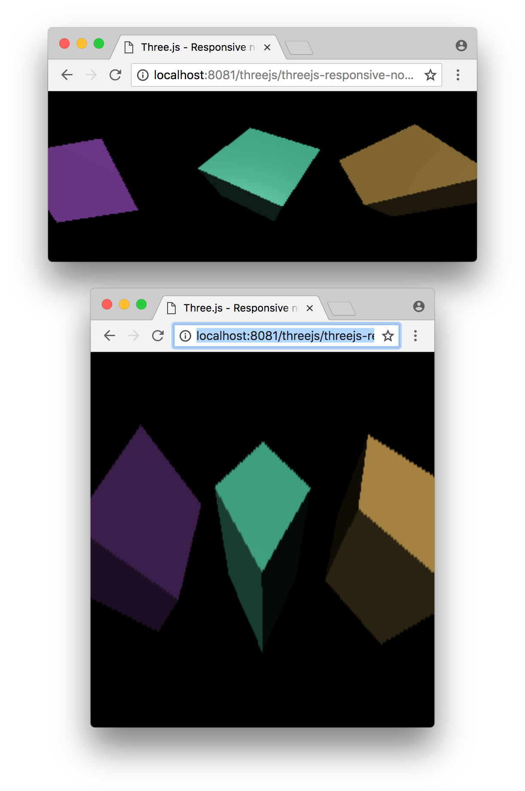
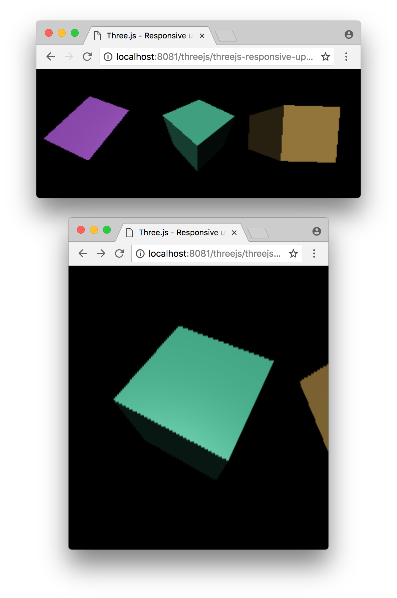

这是有关 three.js 系列文章的第二篇文章。 第一篇文章是关于基础知识。 如果你还没有阅读，可以从那里开始。
这篇文章讲的是如何让你的 three.js 应用适应各种情况。 让网页响应式通常是指网页在从桌面到平板到手机的不同尺寸显示屏上都能良好显示。
对于 three.js，还有更多情况需要考虑。例如，一个具有左右、上下控制的 3D 编辑器是我们可能想要处理的情况。文档中间的实时图表也是一个例子。
我们最后一个示例使用了一个普通的画布，没有 CSS，也没有指定大小。
<canvas id="c"></canvas>
该画布默认大小为300x150 CSS 像素。
在网页平台上，设置某个元素大小的推荐方式是使用CSS。
让我们通过添加CSS使画布填满页面。
<style>
html, body {
margin: 0;
height: 100%;
}
#c {
width: 100%;
height: 100%;
display: block;
}
</style>
在HTML中，body默认有5像素的边距，所以将边距设置为0可以移除边距。将html和body的高度设置为100%可以使它们填充整个窗口。否则，它们的大小仅与填充它们的内容一样大。
接下来，我们告诉id=c元素设置为其容器的100%大小，在这种情况下，容器是文档的body。
最后我们将其 display 模式设置为 block。画布的默认显示模式是 inline。内联元素可能会在显示内容中添加空白。通过将画布设置为 block，这个问题就消失了。
这是结果
你可以看到画布现在填满了页面，但有两个问题。一个是我们的立方体被拉伸了。它们不是立方体，更像是盒子。太高或太宽。在单独的窗口中打开示例并调整大小，你会看到立方体被拉得又宽又高。

第二个问题是它们看起来像低分辨率的，或者是块状和模糊的。将窗口拉到很大，你会真正看到这个问题。
让我们先解决拉伸问题。为此，我们需要将相机的长宽比设置为画布显示尺寸的长宽比。我们可以通过查看画布的 clientWidth 和 clientHeight 属性来完成。
我们将像这样更新渲染循环
function render(time) {
time *= 0.001;
+ const canvas = renderer.domElement;
+ camera.aspect = canvas.clientWidth / canvas.clientHeight;
+ camera.updateProjectionMatrix();
...
现在立方体应该不会再变形了。
在一个单独的窗口中打开示例并调整窗口大小，你应该会看到立方体不再被拉得很高或很宽。无论窗口大小如何，它们都保持正确的长宽比。

现在让我们解决块状问题。
Canvas 元素有两种尺寸。一种尺寸是画布在页面上显示的大小。这就是我们用 CSS 设置的大小。另一种尺寸是画布本身的像素数量。这和图像没有区别。例如，我们可能有一个 128x64 像素的图像，并且用 CSS 显示为 400x200 像素。
<img src="some128x64image.jpg" style="width:400px; height:200px">
画布的内部尺寸，也就是它的分辨率，通常称为其绘图缓冲区（drawingbuffer）尺寸。在 three.js 中，我们可以通过调用 renderer.setSize 来设置画布的绘图缓冲区尺寸。我们应该选择什么尺寸？最明显的答案是“与画布显示的大小相同”。同样，要做到这一点，我们可以查看画布的 clientWidth 和 clientHeight 属性。
让我们编写一个函数来检查渲染器的画布是否已经不是正在显示的大小，如果是，则设置它的大小。
function resizeRendererToDisplaySize(renderer) {
const canvas = renderer.domElement;
const width = canvas.clientWidth;
const height = canvas.clientHeight;
const needResize = canvas.width !== width || canvas.height !== height;
if (needResize) {
renderer.setSize(width, height, false);
}
return needResize;
}
注意，我们检查画布是否真的需要调整大小。调整画布大小是画布规范中一个有趣的部分，如果画布已经是我们想要的大小，最好不要设置相同的大小。
一旦我们知道是否需要调整大小，我们就调用 renderer.setSize 并传入新的宽度和高度。重要的是最后要传入 false。
renderer.setSize 默认会设置画布的 CSS 大小，但这样做并不是我们想要的。我们希望浏览器继续像处理所有其他元素一样工作，即使用 CSS 来确定元素的显示大小。我们不希望 three 使用的画布与其他元素不同。
注意，如果画布被调整大小，我们的函数会返回 true。我们可以用它来检查是否有其他需要更新的内容。让我们修改渲染循环以使用新函数。
function render(time) {
time *= 0.001;
+ if (resizeRendererToDisplaySize(renderer)) {
+ const canvas = renderer.domElement;
+ camera.aspect = canvas.clientWidth / canvas.clientHeight;
+ camera.updateProjectionMatrix();
+ }
...
由于宽高比只有在画布的显示尺寸改变时才会变化，因此我们只在 resizeRendererToDisplaySize 返回 true 时设置相机的宽高比。
它现在应该以与画布显示尺寸匹配的分辨率进行渲染。
为了说明让 CSS 处理大小调整的方式，让我们将代码放到 一个单独的 .js 文件 中。接下来是几个让 CSS 选择大小的示例，注意我们几乎没有修改任何代码，它们就可以正常工作。
让我们把立方体放在一段文本的中间。
这是我们在编辑器风格布局中使用的相同代码，其中右侧的控制区域可以调整大小。
重要的是要注意，代码没有改变。只改变了我们的 HTML 和 CSS。
HD-DPI 代表高密度每英寸点数显示器。这是现在大多数 Mac、许多 Windows 机器以及几乎所有智能手机的标准。
在浏览器中，其工作原理是使用 CSS 像素来设置尺寸，这些尺寸应该保持一致，无论显示器分辨率多高。浏览器只会以更高的细节渲染文本，但物理尺寸相同。
有多种方法可以用 three.js 处理 HD-DPI。
第一个方法就是不要做任何特别的事情。这可以说是最常见的。渲染3D图形需要大量的GPU处理能力。移动设备的GPU相比台式机来说性能较弱，至少在2018年是这样，然而移动电话通常配备非常高分辨率的显示屏。目前顶级的手机具有3倍高清DPI比率，这意味着对于非高清DPI显示屏上的一个像素，这些手机有9个像素。这意味着它们需要进行9倍的渲染。
计算9倍的像素工作量很大，所以如果我们保持代码不变，我们只会计算1倍的像素，浏览器会将其以3倍的大小绘制（3倍乘3倍 = 9倍像素）。
对于任何大型的 three.js 应用，这可能就是你想要的，否则你很可能会得到较慢的帧率。
也就是说，如果你实际上确实想以设备的分辨率进行渲染，在 three.js 中有几种方法可以实现。
其中一种方法是使用 renderer.setPixelRatio 告诉 three.js 分辨率倍增器。你可以向浏览器查询从 CSS 像素到设备像素的倍增器，然后将其传递给 three.js。
renderer.setPixelRatio(window.devicePixelRatio);
之后，任何对 renderer.setSize 的调用都会自动使用你请求的尺寸乘以你传入的像素比率。强烈不推荐这样做。见下文
另一种方法是在你调整画布大小时自己处理。
function resizeRendererToDisplaySize(renderer) {
const canvas = renderer.domElement;
const pixelRatio = window.devicePixelRatio;
const width = Math.floor( canvas.clientWidth * pixelRatio );
const height = Math.floor( canvas.clientHeight * pixelRatio );
const needResize = canvas.width !== width || canvas.height !== height;
if (needResize) {
renderer.setSize(width, height, false);
}
return needResize;
}
第二种方法从客观上讲更好。为什么？因为这意味着我得到了我所要求的。
在使用 three.js 的许多情况下，我们需要知道画布 drawingBuffer 的实际大小。例如，当制作后期处理滤镜时，或者如果我们制作一个访问 gl_FragCoord 的着色器，当制作截图，或者为 GPU 选择读取像素，为绘制到 2D 画布时，等等……有很多情况，如果我们使用 setPixelRatio，那么我们的实际大小会与我们请求的大小不同，我们将不得不猜测什么时候使用我们要求的大小，什么时候使用 three.js 实际使用的大小。
通过自己进行操作，我们总是知道所使用的大小就是我们请求的大小。没有任何特殊情况是在后台发生魔法。
以下是使用上述代码的一个示例。
可能很难看出区别，但如果你有高清DPI显示器，并将此示例与上面的进行比较，你应该会注意到边缘更加清晰。
在某些操作系统上使用分数UI缩放因子时（例如：OSX或Linux上的150%），假设实际物理分辨率等于 width * window.devicePixelRatio 和 height * window.devicePixelRatio 的前提不再成立。这可能导致GPU负载过高、帧率下降和高功耗。
一种可能的缓解方法是限制最大内部分辨率（例如：限制宽度 × 高度），以使缓冲区保持在安全范围内。
function resizeRendererToDisplaySize(renderer, maxPixelCount=3840*2160) {
const canvas = renderer.domElement;
const pixelRatio = window.devicePixelRatio;
let width = Math.floor( canvas.clientWidth * pixelRatio );
let height = Math.floor( canvas.clientHeight * pixelRatio );
const pixelCount = width * height;
const renderScale = pixelCount > maxPixelCount ? Math.sqrt(maxPixelCount / pixelCount) : 1;
width = Math.floor(width * renderScale);
height = Math.floor(height * renderScale);
const needResize = canvas.width !== width || canvas.height !== height;
if (needResize) {
renderer.setSize(width, height, false);
}
return needResize;
}
这篇文章涵盖了一个非常基础但又非常重要的主题。接下来让我们快速 了解 three.js 提供的基本原语。